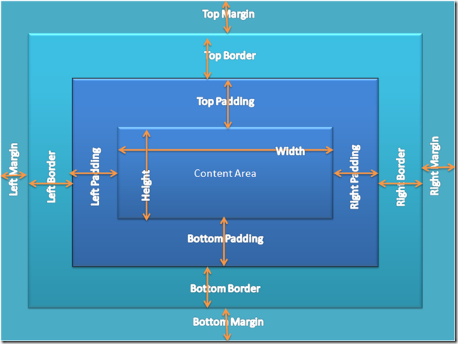

04. CSS - част 1
Съдържание
- Какво е CSS?
- Как работи CSS?
- CSS синтаксис
- Използване на CSS
- Основни селектори
- CSS мерни единици
- CSS правила за презентация/ декорация
- CSS правила за позициониране и изглед
CSS
HTML описва съдържанието, CSS описва визуализацията.
Тоест:
- Как да са подредени нещата на екрана.
- Кое колко да е голямо.
- Какъв цвят да е даден текст, фон и тн.
Как работи CSS?
За да можем лесно да стилизираме дадена страница избираме компонентите, които искаме да стилизираме (чрез някакъв селектор) и задаваме стойности на property-тата, които искаме да променим. Съответно браузъра ще ги промени на всички елементи, които е match-нат даденият селектор.
CSS reset
- Браузърите имат свои стилове по default.
- За да избегнем разлики от резултатът, който искаме да постигнем, трябва да ресетнем тези стойности
- http://cssreset.com/
CSS синтаксис

Използване на CSS
Има 3 начина на използване на CSS
Използване на CSS
Първия е като стойност на style атрибута на html елемент.
<a href="http://google.com/" style="color:red">Click Here</a>
Използване на CSS
Втория е като добавим style tag в HTML-a (обикновено в head частта).
<style type="text/css">
a { color: red }
</style>
Използване на CSS
Третия е да изнесете CSS дефинициите във външен файл и го свържете с HTML документа.
<link href="style.css" rel="stylesheet">
Добра практика е да се използва третия начин.
Основни CSS селектори
- *
- Избира всички елементи - не се препоръчва.
- foo
- Избира елементи с таг foo
- .bar
- Избира елементи с атрибут клас = bar
- #baz
- Избира елементи с атрибут id = baz
- foo bar
- Избира елементи bar, наследници на елементи foo
- foo, bar
- Може да се изброят няколко селектора и ще избере обединението им
CSS мерни единици
- Pixels (px): px са фиксирана мерна единица. Всеки екран има точно определен брой пиксели на дадена резолюция.
- Points (pt): pt е мерна единица обикновено използвана при неща за принтиране.
- “Ems” (em): em e мерна единица с променлив размер. 1em = конкретния размер на шрифта за дадения елемент.
- Percent (%): % има различен смисъл за различен контекст. Когато се задава размер на шрифта тя е подобна на em - 100% = 1em = конкретния размер на шрифта. В останалите случаи 100% се пада съответния размер на даден родител, когато размер с проценти въобще е валиден.
Правила, свързани с текста
- color
- Определя цвета на текста
- font-size
- Определя размера на текста. Може да бъде някоя от стойностите: xx-small, x-small, small, medium, large, x-large, xx-large, smaller, larger или числова стойност
- font-family
- Име на шрифта. Изброяват се със запетая (verdana, sans-serif, etc)
- font-weight
- Може да бъде normal, bold, bolder, lighter или числова стойност в интервала [100 … 900]
Правила, свързани с текста
- font-style
- normal, italic, oblique
- text-decoration
- none, underline, line-trough, overline, blink
- text-align
- left, right, center, justify
- text-shadow
- "text-shadow:
. Например text-shadow: 2px 2px 7px #000000;"
Правила, свързани с текста
За определяне едновременно на няколко правила за шрифта може да се използва краткия запис (Shorthand):
{ font: italic normal bold 12px verdana; }
Той е еквивалентен на:
{
font-style: italic;
font-variant: normal;
font-weight: bold;
font-size: 12px;
line-height: 16px;
font-family: verdana;
}
Правила, свързани с текста
Декларацията на нов шрифт става посредством @font-face
@font-face {
font-family: Dosis;
src: url("dosis.ttf");
}
.my-class {
font-family: Dosis;
font-size: 3.2em;
}
Правила, свързани с текста
Text Overflow - определя какво да се случи, когато един текст излиза извън размера на родителския му елемент. Възможноте стойности са:
- ellipsis – отрязва текста, който излиза извън рамката на родителския елемент и слага три точки
- clip – просто отрязва текста
Цветове
- HEX
- color: #f1a2ff
- RGB (red, green, blue)
- color: rgb(241, 162, 255)
- RGBA (red, green, blue, alpha)
- color: rgba(241, 162, 255, 0.1). Последната стойност в скобите указва прозрачността. Нейната стойност може да бъде в интервала 0.0 – 1.0
- HSL (hue-saturation-light)
- color: hsl(291, 85%, 89%);
- HSLA (hue-saturation-light-alpha)
- color: hsla(291, 85%, 89%, 0.1);
Background
- background-image
- Пример: background-image:url("example.png");
- background-color
- Указва цвета на бекграунда
- background-repeat
- Възможни стойности: repeat-x, repeat-y, repeat, no-repeat
- background-attachment
- Възможни стойности: fixed / scroll
- background-position
- Указва вертикалната и хоризонталната позиция на бекграунд картинката. Примери: background-position: top left; background-position: -20px 50%;"
Border
- border-width
- Възможни стойности: thin, medium, thick или числова стойност (например 1px)
- border-color
- Указва цвета на рамката
- border-style
- Възможни стойности: none, hidden, dotted, dashed, solid, double, groove, ridge, inset, outset
Краткият запис за указване на няколко border стойности едновременно е:
{ border: 1px solid #000; }
Box Model
Display
- display:none - елементът е скрит и страницата се рендерира все едно той въобще не съществува
- display:inline - елементът се разглежда като обикновен текст и следващите го елементи продължават непосредствено след него (вдясно от последния символ)
- display:block - елементът се разглежда като правоъгълник - той има width и height property-та и елементите след него продължават на долния ред
- display:inline-block - средно аритметично между първите 2. Елементът има височина и ширина, но откъм гледна точка на следващите елементи е все едно, че е бил inline и те продължават вдясно от него
- display:table, display:table-row, display:table-cell - показват се както биха се показвали съответните елементи на таблица
Width
- width
- определя широчината на елемента
- прилага се само върху блокови елементи
- широчината на inline елементите винаги е широчината на тяхното съдържание
- min-width
- определя минималната широчина на елемента. Има по-голяма сила от width. Тоест, ако width < min-width, широчината на елемента ще бъде стойността на min-width
- max-width
- определя максималната широчина на елемента. Отново има по-голяма сила от width.
Height
- height
- определя височината на елемента
- прилага се само върху блокови елементи
- височината на inline елементите винаги е височината на тяхното съдържание
- min-height
- определя минималната височина на елемента. Има по-голяма сила от height.
- max-height
- определя максималната височина на елемента. Отново има по-голяма сила от height.
Margin and Padding
- Определят разстоянието около елемента
- Могат да бъдат посочени отделно за различните страни: margin-top, margin-left и тн.
- Margin e растоянието след border-а на елемента
- Padding е разстоянието межде border-а и съдържанието на елемента
- Collapsing margins – когато вертикалните margin- и на два съседни елемента се допрат, само margin-a на елемента с по-голям margin се показва
Margin and Padding
- margin: 25px - указване едновременно margin 25px на четирите страни
- margin: 10px 20px – указване margin-top и margin-bottom по 10px и margin-left и margin-right по 20px
- margin: 5px 3px 8px – top 5px, left и right – 3px, bottom - 8px
- margin: 1px 3px 5px 7px - top, right, bottom, left. По часовниковата стрелка, започвайки с top
- Кратките записи за padding са същите
Float
- float позифионира елемента в ляво или в дясно
- float:left – разполага елемента в ляво, а останалото съдържание в дясно
- float:right – позиционира елемента в дясно, а останалото съдържание в ляво
- Margins на елементи с float не се колапсват
Clear
- Clear указва от коя страна на елемента не са позволени елементи с float
- Възможни стойности: left, right, both
Как да го използваме:
.clearfix:after {
content: "";
visibility: hidden;
display: block;
height: 0;
clear: both;
}
Position
Position определя позиционирането на елемента в страницата
Възможни стойности:
- static – default. Елементът не е позициониран по специален начин.
- relative – елементът се позиционира релативно, спрямо нормалното си разположение
- absolute – релативно спрямо най-близкия родителски елемент с релативна позиция
- fixed – винаги е разположен на едно и също място и не се отмества при скрол на страницата